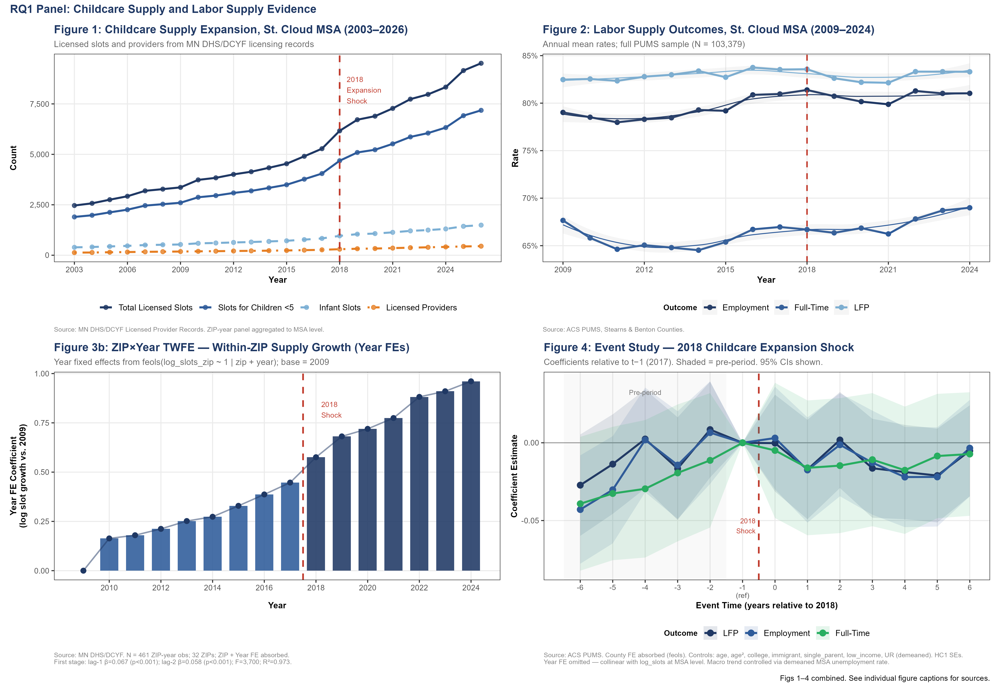
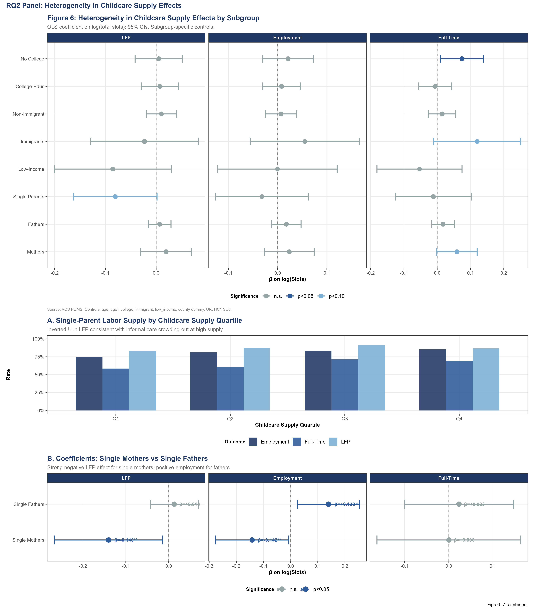
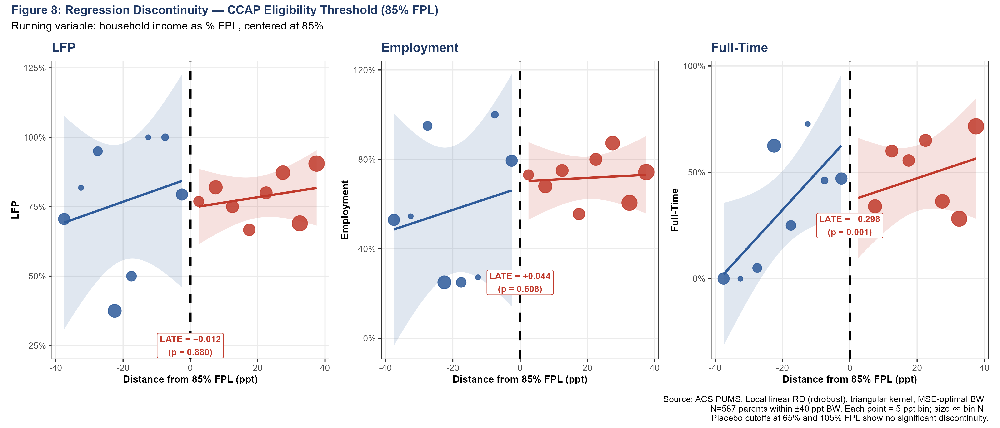

The Childcare Constraint
Estimating the causal effect of childcare access on labor supply in Central Minnesota
Research Question
Does access to licensed childcare increase labor-force participation, employment, and full-time work among parents of young children?
Economic Contribution
This project links two decades of Minnesota childcare licensing records with ACS PUMS microdata and labor-market indicators to evaluate how childcare supply and subsidy eligibility shape parental labor-supply decisions.
Key Findings
- Responses differ sharply by household type: single mothers exhibit a significant negative labor-force participation response (β ≈ −0.14), while single fathers exhibit a significant positive employment response (β ≈ +0.14) in higher-supply areas.
- Full-time employment falls sharply at the CCAP subsidy-eligibility threshold (RD estimate ≈ −0.30, p = 0.001), while labor-force participation and employment show no statistically meaningful discontinuity.
- The results suggest that the design and phaseout of childcare assistance may matter as much as the overall level of childcare supply.
- RD estimates are interpreted with bandwidth-sensitivity caveats, and placebo cutoffs show no comparable discontinuity.
Data: 20 years of Minnesota DHS/DCYF licensing records, ACS PUMS (N ≈ 103,000), Minnesota DEED, QCEW, and FRED.


